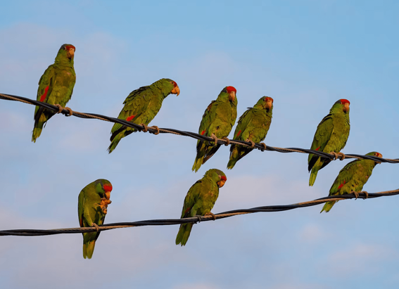

NATIONAL GEOGRAPHIC
She was Genghis Khan’s wife and made the Mongol Empire possible
HISTORY & CULTURE
Tents and animals. Horses and swords. The early days of the Mongol Empire were characterized by battle, conquest, and quick expansion, leading the people ruled by Genghis Khan to domination of the world’s largest contiguous empire.
But the great khan didn’t rule alone: His principal wife, Börte, was a critical player in the establishment of the Mongol Empire in the 13th century. Here’s how the first Mongol empress exerted her influence and why she and other women are among the empire’s unsung heroes.
Who was Börte?
Born around 1161 to the Olkhonoud tribe of what is now inner Mongolia, Börte was betrothed to the future emperor known as Temüjin in his early years as a child. Though details about her life are scant, historians know that she married Temüjin, who came from the Borjigin tribe, as a teenager. But their newlywed bliss was shortlived: soon after the marriage, Börte was abducted by a member of the Merkit tribe.
Bride kidnapping was common at the time, and rival tribes did so both to disrupt the lives of their enemies and to settle scores. By kidnapping Temüjin’s new wife, the Merkits were attempting to avenge a longstanding grievance: Temüjin’s mother, Hö’elün, had originally been married to a Merkit before she was abducted by Yesügei, Temüjin’s father.
Although such kidnappings usually resulted in the woman being forced to stay with her captor, Temüjin decided to pursue an unexpected course: Along with his close friend Jamukha, he managed a daring rescue of his new wife. This kicked off outright war between the Borjigins and the Merkits. The Borjigins eventually won, enslaving Merkits women and overtaking their territory, in 1200.
Just a few years later, Temüjin formally adopted the name Genghis (also spelled Chinggis) Khan and became the emperor of a newly united group of tribes that would become known as the Mongols.
Women of influence
Temüjin continued to conquer other tribes for decades, building the Mongols into a feared force that united warring tribes and overtook more and more territory. Meanwhile, Börte became his principal wife.
Over the years, the emperor would marry at least six women, amass hundreds of concubines, and have at least 13 children. But as his first and most favored wife, Börte was the most influential of them all, and her role as principal wife also entailed caring for her husband’s expanding empire.
Her importance would have been visible to all, says Anne Broadbridge, a professor of history at the University of Massachusetts, Amherst and the author of Women and the Making of the Mongol Empire. Principal wives managed their own ordo, or household, and were waited on by massive staffs. From concubines and lesser wives to herds of animals, shepherds, servants, and security guards, women’s households could number in the hundreds.
Their households may have been mobile as the nomadic group moved from destination to destination, but they were anything but compact. Instead, these households reached a dizzying scale that attracted the attention of chroniclers and the conquered, who left behind historical records of the women’s wealth. During the rule of Genghis Khan’s grandson, Kublai, for example, the households of the emperor’s four wives may have each included up to 10,000 people, including servants and staff. Wives also traveled with thousands of animals and hundreds of wagons.
A shrewd strategist
But Börte’s influence extended far beyond her children and her yurt. Her place in the Mongol hierarchy offered her coveted access to her husband, who sought out her advice on everything from politics to military strategy.
She put that trust to good use, even when it came to the emperor’s closest friends. One of them was Jamukha, her husband’s closest friend who had helped him save her after she was kidnapped and who eventually became khan of the Jadaran. When Börte saw signs that the friends’ alliance was crumbling, she advised her husband to break off the friendship, and in 1204 Temüjin defeated Jamukha in battle and had him executed.
Another political intervention had to do with Teb Tenggeri, a shaman who was one of the khan’s close companions. Teb had predicted Temüjin’s rise to power, and thus seemed entitled to a role in the khan’s court. When he publicly insulted Temüjin’s brother, though, Börte drew the line and insisted that her husband severely punish the shaman.
Comments :
- john Very good
- john Very good
Leave a Reply
Your email address will not be published. Required fields are marked*
Related posts:
-
 American crocodiles are spreading north in Florida. That’s a good thing.
American crocodiles are spreading north in Florida. That’s a good thing.On a canal bank lined with palm trees off the Banana River in Satellite Beach, Florida, in October, a 10-foot-long American crocodile basked in the midday sun, its toothy jaws opening as neighbors looked on from their docks.
View article -
 What’s the real difference between a mutt and a designer dog
What’s the real difference between a mutt and a designer dogThough much attention is given to purebred and designer dogs, more than half of all dogs living in the United States are mixed breeds: the all-American mutt, celebrated on National Mutt Day on December 2.
View article -
How these parrots went from the tropical jungle to the concrete jungle
Temple City, California, is an unassuming city east of Pasadena that’s home to the usual busy thoroughfares, shopping malls, and residential neighborhoods that one expects in densely developed Los Angeles County.
View article